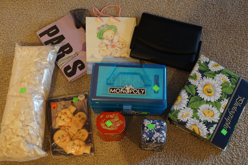
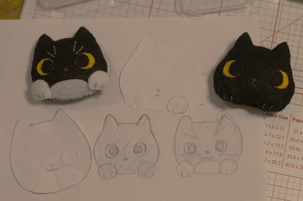

I wrote a JS gallery script the other day and added meetup photos for EVERY meetup/doll con/whatever I've been to. they're all on the new "doll memories" page. it's not a great script or anything but it's mine. It was a lot of work to copy and paste every image link and way too late in I wrote a script to do it. it took almost no time i should have done it way earlier...
pages like box openings and my room pics were also converted to the gallery viewer. I also added a few pages of galleries for some of my dolls. I haven't added any old pics though, just the ones from blog posts. the arrow keys should work btw! I've encountered some bugs with the script so let me know if you find any. The pages should all still work with scripts disabled so RMS could view them still. he wouldnt be able to navigate to them though. im sorry, RMS, if youre reading this, email me and i'll make an index page just for you. oh my god RMS wouldnt even be able to find this blog post!!!!
next time i write a website I think i'll make it not reliant on JS and just write a website builder script instead. I'd also fix the problem where you can't link to any of the inner pages... it might be too late for that one on this site. you can actually link them like this, but its a huge pain and doesnt work well. i promise none of my JS is malicious and i wrote it all myself! no sketchy or unknown libraries are linked!
and now... thrift store haul of the day
Ryan's
I politely request everyone use this bag when giving me a present.
Ryan wanted this for something
Ryan's. ?????
you might be asking yourself "did fran really just buy this bag of fluff??" yes i did and its so soft!! i dont even know what it is but i love it.
i hate it tbh
my 2nd album and I still haven't printed any photos!!!!
I made some felt ornaments for Ryan's mom for Christmas. they're ryan's two late kitties, Tanner and Bailey. Tanny died in 2019 and bailey died in 2020. They had both lived long happy lives! tanny was a big stinker who loved to be around people and bailey was too shy for me to know. i caught him once or twice and hugged him even though he wasnt into it. he was a very soft kitty! I thought this little ornaments would be a great gift for his mom, but now ryan wants them and uh I guess i need to make more.
i would say patterning is half the battle but it's really handsewing. i like to put some glue around the inner edges to keep them crisper. you really dont want the glue to get on the showing side though. its pretty hideous! i was going to give them little black mouths and noses but black is so hard to see on black. that's the problem with black kitties. they really are just little pairs of eyes!